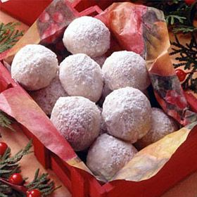

They're an elegant treat to enjoy any time of the year and to add more happiness and joy into your
dessert.
INGREDIENTS

all-purpose flour
walnuts, very finely chopped
powdered sugar
Salt
Butter softened
Granulated sugar
DIRECTION !!!
Step 1:
Preheat oven to 350° and line a large cookie sheet with parchment. In a large bowl, mix flour, walnuts,
granulated sugar, salt, and vanilla. Add butter and, using your hands, combine everything until mixture
resembles a coarse meal.
Step 2:
Form dough into small balls and place on prepared cookie sheet. Bake 15 minutes.
Step 3:
When they’re still warm but cool enough to touch, roll cookies in powdered sugar.
Step 4:
Set aside on a rack to cool completely. When cool, dust again in powdered sugar.